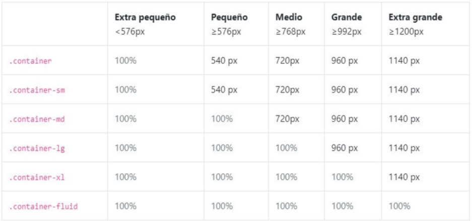
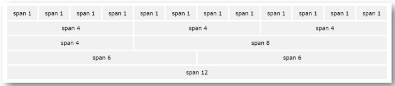

Bootstrap: Teoría
¿Qué es un framework?
Es un conjunto de herramientas, librerías, convenciones y buenas prácticas que pretenden encapsular las tareas repetitivas en módulos genéricos fácilmente reutilizables.
Un framework CSS es un conjunto de herramientas, hojas de estilos que permiten olvidarse de las tareas repetitivas para centrarse en los elementos únicos de cada diseño en los que puede aportar valor.
Bootstrap
Es un framework CSS, es decir, es un archivo CSS (tiene también archivos JS) que se añade en los proyectos para tener una serie de estilos ya preparados para utilizar. Este tipo de librerías CSS suelen incluir estilos para los elementos más columnes de una página web, como por ejemplo, botones, tarjetas, navbars, etc.
Además tiene una serie de estilos para crear columnas fácilmente.
Su principal objetivo es permitir la construcción de sitios web responsive para dispositivos móviles.
Para instalarlo, tenemos dos maneras:
- Descarlo y utilizarlo de manera local.
- Incluir CDN en el proyecto
Container
Los contenedores como su nombre indica, sirven para crear una 'caja' o 'contenedor' dentro de la que va el contenido de una página web.
Cuando le aplicas a un elemento HTML la clase container lo que ocurre es que a ese elemento se le aplica un ancho y un padding determinado y además se coloca en el centro de la página web.
Bootstrap viene con tres contenedores diferentes:
- .container: que establece un max-width en todos los breakpoints responsive. Genera dos márgenes (derecha-izquierda) del mismo tamaño y también se centra.
- .container-fluid: que establece un width: 100% en todos los breakpoint. Ocupa toda la pantalla, es decir, el 100% del tamaño disponible de la pantalla. Se utiliza más en header o navs para que ocupen todo el ancho si le ponemos un color de fondo.
- .container-{breakpoint}: que tiene un width:100% hasta el breakpoint especificado. Esto está relacionado con los media queries, Bootstrap ya establece valores predeterminados. 
Grid System
El sistema de grillas de Bootstrap permite hasta 12 columnas en la página. Es posible agrupar las columnas para crear columnas más amplias. Este sistema es responsive, por lo tanto, las columnas se reorganizarán automáticamente dependiendo del tamaño de la pantalla. Podemos elegir la distribución que queramos, siempre que alcancemos las 12 columnas.
- La clase row funcionaría como una fila en una tabla.
- La clase col son las columnas.